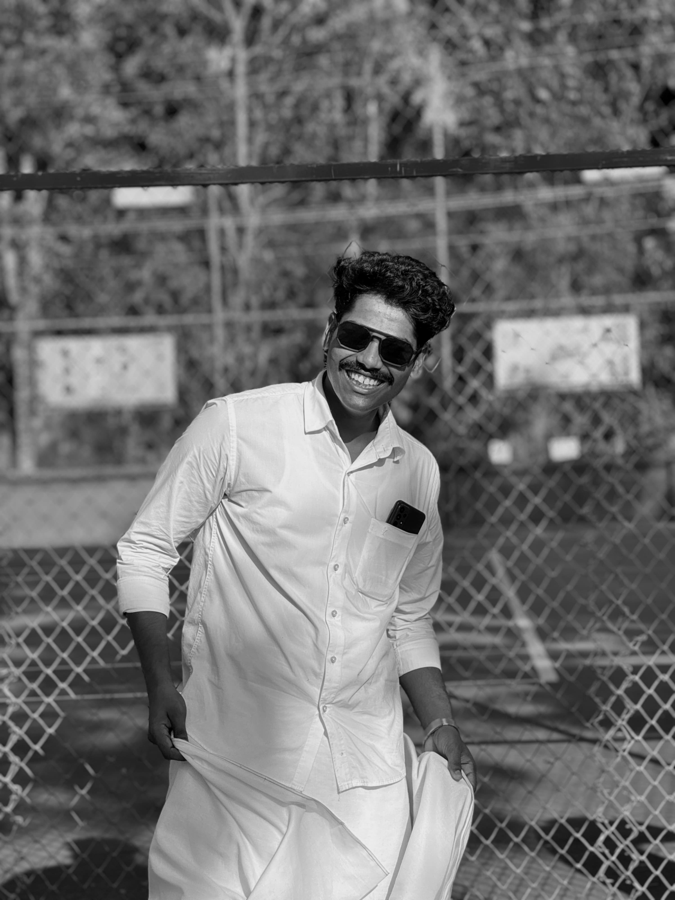

JENSON
You are the architect of your own fate, capable of shaping,
steering, and mastering your surroundings.
With your hands, you can craft the life you envision,
molding it into a masterpiece of your own design..
Activity
PHOTOGRAPHY


PHOTO EDITING
ABOUT

I'm Jenson Jose from Chalakudy, and I recently completed my BSc in Computer Science from Christ College Irinjalakuda. As a fresher, I'm eager to kickstart my career in the field. I have a foundational understanding of HTML, Python, and other programming languages, along with certification as a Microsoft Office Specialist.
Beyond my technical skills, I have a passion for photography and photo editing.Combining creativity with technology is where I find my stride. I'm excited about the prospect of integrating these interests into my professional journey.
Looking forward to exploring opportunities and contributing positively to the tech and creative industries.
SKILLS
Leadership
Communication
Adaptability
PROJECTS
Audio To Sign Language
In recent years, there has been a growing interest in developing technologies that bridge the communication gap between individuals who are deaf or hard on hearing and those who can hear. One such technology is the Audio to Sign Language Tool, which aims to translate spoken language into sign language gestures in real-time. This innovative solution can enhance communication and facilitate effective interaction between hearing and deaf individuals. The Audio to Sign Language Tool leverages the power of machine learning and computer vision techniques to analyse spoken language and generate corresponding sign language gestures. Python, a popular programming language, provides a flexible and efficient platform for implementing this converter. By utilizing Python libraries and frameworks, we can create a robust and accurate system that can recognize and interpret spoken language and generate the appropriate sign language output. The key components of the Audio to Sign Language Converter system include: Speech Recognition, Natural Language Processing (NLP), User Interface, Lemmiatization, Stop words, Tokenization, Characterization, Speech API, NLP toolkit, localhost, Hand Gestures, Sign Language


RememberMe System
The RememberMe system is a reminder tool for managing birthdays and events, making sure important dates are never missed with daily notifications, automated birthday wishes, and the ability to upload and download event reports. It works on 64-bit Windows 7 or higher and uses Django. Faculties and students can register and log in to see a welcome page. Clicking the view button shows a calendar with events and birthdays for each date, plus downloadable brochures. The inbox button shows daily notifications of upcoming birthdays and events. The system also sends birthday wishes by email and lets faculties upload and download event reports for easy record-keeping. The RememberMe system is a simple and effective way to keep track of important dates and activities.


ACHIVEMENTS
Microsoft Office Specialist